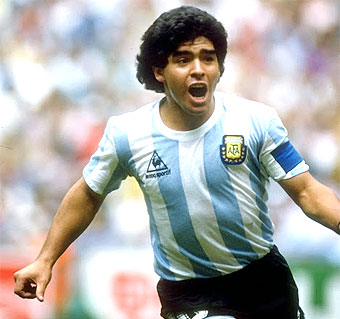
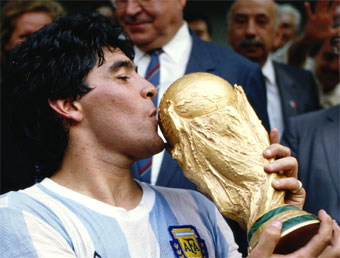
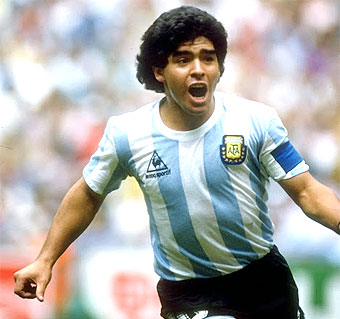
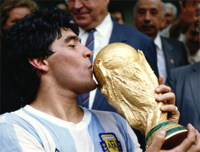

El futbolista más popular de Argentina nació, según consta en el Registro Civil, el día 30 de octubre de 1960 en Lanús, aunque todos lo identifiquen como el Pelusa de Villa Fiorito, donde transcurrió su infancia y desde donde saltó a la fama. A los nueve años inició su romance con el fútbol, cuando actuaba en un equipo infantil conocido como Los Cebollitas. Don Diego, su padre, regentaba una canchita en el barrio y dirigía el equipo Estrella Roja, al que Diego hijo accedió siendo adolescente y a despecho de sus compañeros de más edad. Estudió en el colegio comercial Avellaneda, pero no terminó el primer año del secundario, pues pasaba sus horas haciendo jueguitos (casi malabares) con la pelota. Fichado por Argentinos Juniors, debutó en la primera división en 1976, diez días antes de cumplir dieciséis años. Siguió jugando en Argentinos Juniors hasta 1980, y si bien su equipo no obtuvo ningún campeonato, Maradona fue el máximo goleador de los torneos argentinos de los años 1978, 1979 y 1980. En 1979 formó parte de la selección juvenil que ganó el campeonato del mundo. En 1981 pasó al Boca Juniors (el River Plate también intentó contratarlo), equipo con el que salió campeón ese mismo año.
Con la selección argentina, Maradona había lucido ya su magia en el combinado que ganó el campeonato mundial juvenil en Japón (1979). En la categoría absoluta, Maradona formó parte de las selecciones nacionales que participaron en cuatro campeonatos mundiales: los de España (1982), México (1986), Italia (1990) y Estados Unidos (1994). Se alzó con el campeonato del mundo disputado en México (1986) y con el subcampeonato en Italia (1990). En el mundial de Estados Unidos (1994) sólo llegó a disputar dos partidos; tras el segundo, dio positivo en un control antidopaje y fue suspendido.